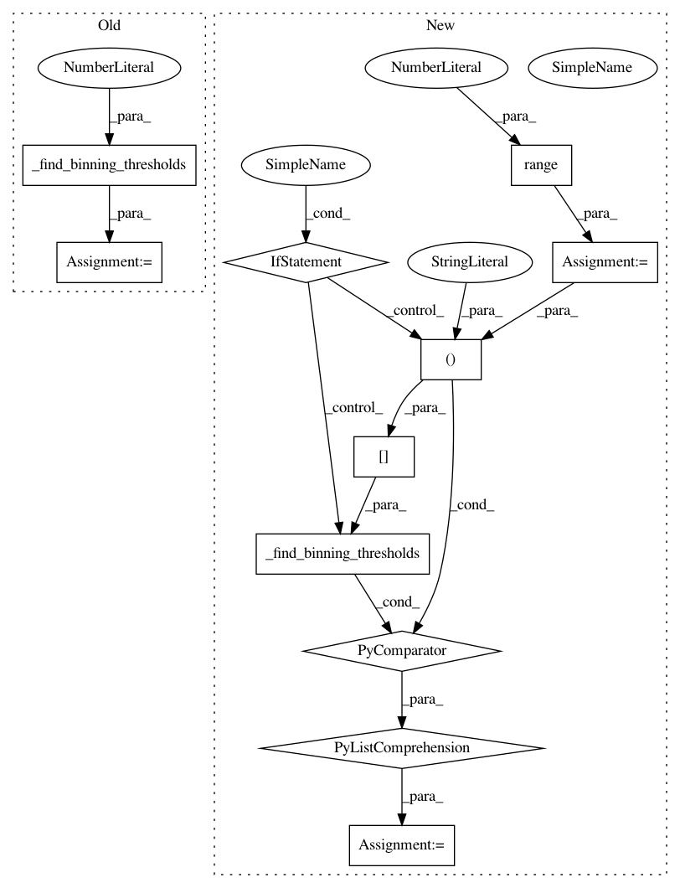

cd673475bde70e87255ccd9b6f35687ce59b4b67,sklearn/ensemble/_hist_gradient_boosting/tests/test_binning.py,,test_find_binning_thresholds_low_n_bins,#,70
Before Change
def test_find_binning_thresholds_low_n_bins():
bin_thresholds = _find_binning_thresholds(DATA, max_bins=128,
random_state=0)
assert len(bin_thresholds) == 2
for i in range(len(bin_thresholds)):
assert bin_thresholds[i].shape == (127,) // 128 - 1
assert bin_thresholds[i].dtype == DATA.dtype
After Change
def test_find_binning_thresholds_low_n_bins():
bin_thresholds = [_find_binning_thresholds(DATA[:, i], max_bins=128)
for i in range(2)]
for i in range(len(bin_thresholds)):
assert bin_thresholds[i].shape == (127,) // 128 - 1
assert bin_thresholds[i].dtype == DATA.dtype
In pattern: SUPERPATTERN
Frequency: 3
Non-data size: 11
Instances
Project Name: scikit-learn/scikit-learn
Commit Name: cd673475bde70e87255ccd9b6f35687ce59b4b67
Time: 2020-10-14
Author: thomasjpfan@gmail.com
File Name: sklearn/ensemble/_hist_gradient_boosting/tests/test_binning.py
Class Name:
Method Name: test_find_binning_thresholds_low_n_bins
Project Name: scikit-learn/scikit-learn
Commit Name: cd673475bde70e87255ccd9b6f35687ce59b4b67
Time: 2020-10-14
Author: thomasjpfan@gmail.com
File Name: sklearn/ensemble/_hist_gradient_boosting/tests/test_binning.py
Class Name:
Method Name: test_find_binning_thresholds_random_data
Project Name: scikit-learn/scikit-learn
Commit Name: cd673475bde70e87255ccd9b6f35687ce59b4b67
Time: 2020-10-14
Author: thomasjpfan@gmail.com
File Name: sklearn/ensemble/_hist_gradient_boosting/tests/test_binning.py
Class Name:
Method Name: test_map_to_bins